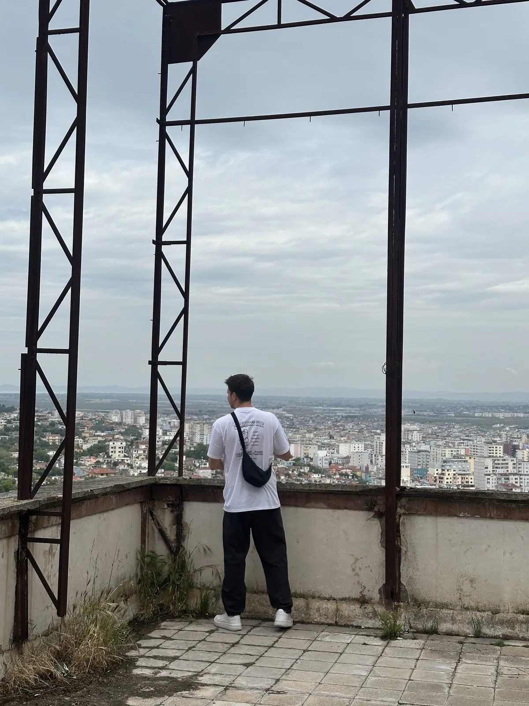
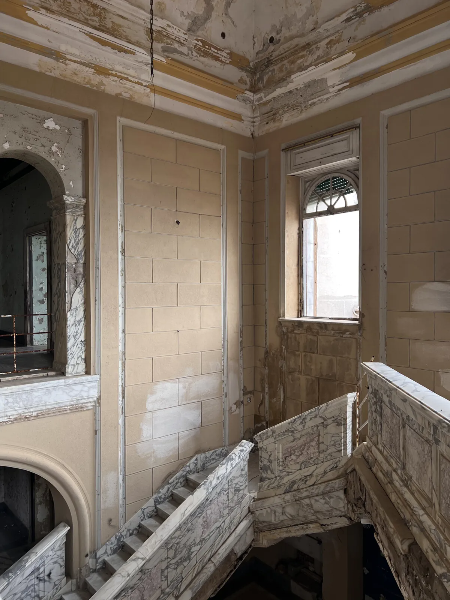
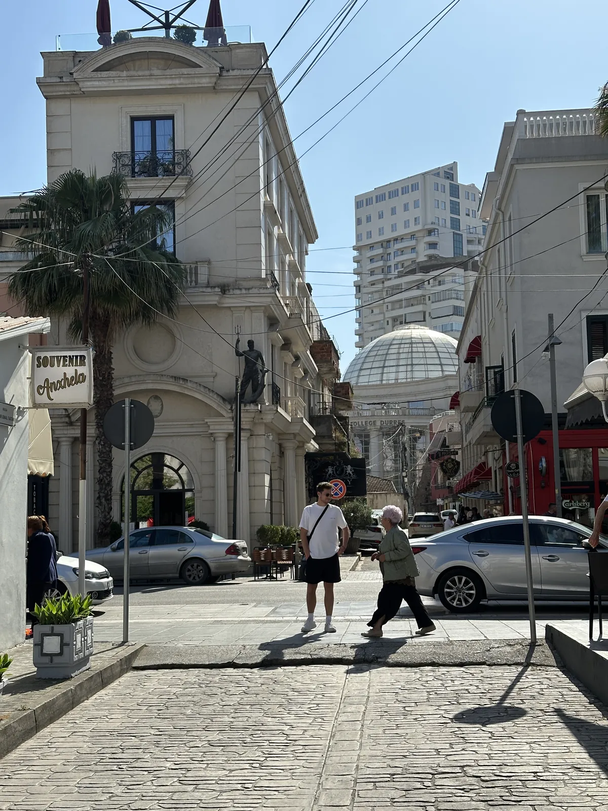
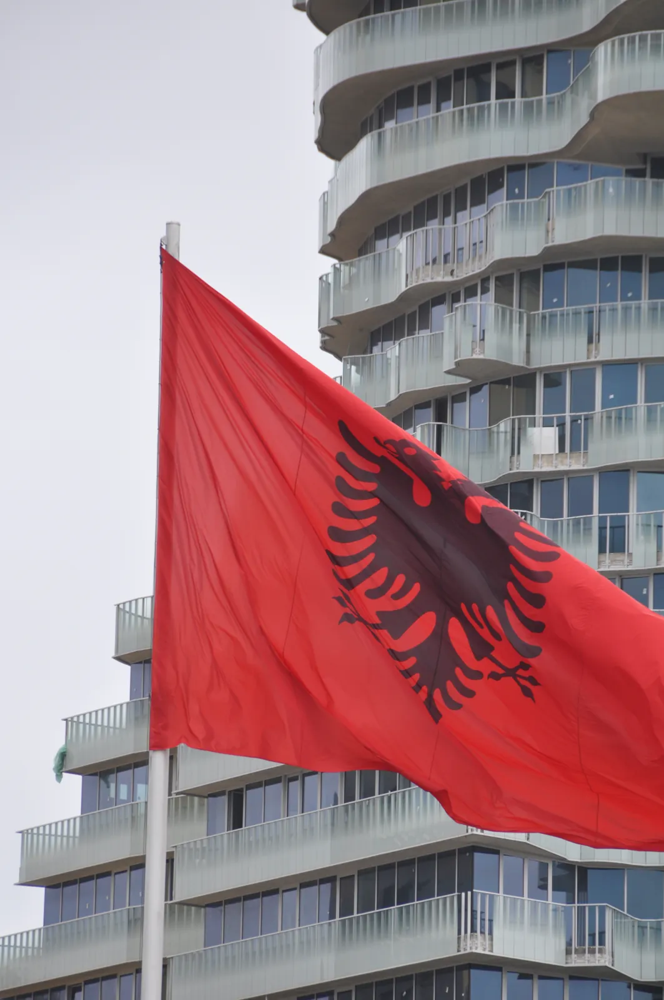
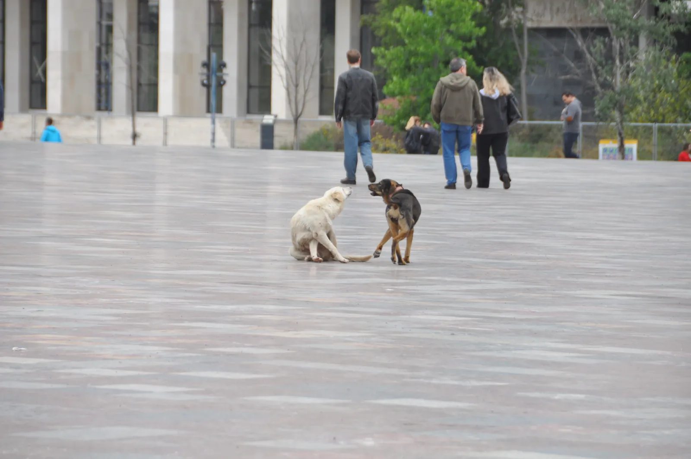

🇦🇱 Tirana Guide: 16 places – bunkers, Blloku, Krujë & Durrës beyond the clichés

Table of contents
- 🗺️ Map: 14 places at a glance
- My story in Tirana
- At a glance
- Getting to Tirana and around
- 1. Bunkers & dictatorship: the history that stays with you
- 2. Experiencing Tirana: Blloku, the Pyramid & views
- 3. Day trip to Durrës: antiquity, beach, street dogs
- 4. Day trip: Krujë – castle & bazaar
- Food, drink & prices
- Where to stay
- What makes Albania special
- Your plan
- FAQ
Tirana is the capital nobody has on their list – and that is exactly why it is so exciting. More colourful than expected, cheaper than you think and with a history that does not let go: for decades Albania was one of the most isolated countries in Europe, and today you sit with matcha and cake in a café in the former closed quarter of the party elite.
This guide takes you through Tirana and the coastal city of Durrës, only about an hour away. You get getting there, prices in lek, tips on the bunker museums, cafés and a three-day plan. All prices are guidelines (2026) – admissions change, so check on site or online.
🗺️ Map: 14 places at a glance
My story in Tirana
In May 2026 I was in Tirana and Durrës – two cities less than an hour apart, and still two different worlds. Just a few steps from Skanderbeg Square, Bunk'Art 2 recalls the dictatorship. A few streets further on, in Blloku, you now sit over matcha and cake in a café. It hardly gets bigger a contrast. My strongest moment, though, was Bunk'Art 1: a huge nuclear bunker on the edge of town built for dictator Hoxha and his government – and almost empty when I was there. It impressed me more than many a big museum.


This guide contains affiliate links (GetYourGuide, Omio). If you book through them I earn a small commission – you never pay a cent more. Prices and opening hours change – double-check before you go.
🆓 Free things to do
4 places in Tirana you can enjoy without an entry fee or completely free (for some, only a part costs extra, e.g. a tower or museum):
At a glance
Getting to Tirana and around
From the airport
Tirana airport (TIA) lies about 17 km outside the city. The airport bus costs around 300 lek (roughly €3), takes about 30 minutes and runs roughly hourly; check operating hours and the city stop beforehand. A taxi costs about €20–28 (agree the price first), the ride takes about 25 minutes.
In the city
The centre is easy on foot. For longer distances taxis are cheap: most rides in the centre are around 300–500 lek. The Bolt app is often recommended – you see the price in advance. To Bunk'Art 1 and the Dajti cable car on the edge of town you take a bus, shuttle or taxi.
To Durrës
Durrës lies about 35 km west. The bus takes about 30–40 minutes and costs around 150 lek.
1. Bunkers & dictatorship: the history that stays with you
For over 40 years Albania was one of the most isolated countries in the world. After the Second World War Enver Hoxha sealed the country off almost completely until 1985 and, fearing an invasion, had hundreds of thousands of bunkers built. The borders only opened in 1991. Two of these bunkers are museums today – and both are worth it.
Bunk'Art 1💎 Hidden gem
A huge nuclear bunker on the edge of town built for Hoxha and his government. Many rooms hidden inside the mountain now tell history – from everyday life under the dictatorship to exhibitions on Albania’s recent history. Allow roughly 80 minutes to 2 hours.
The complex was built in the 1970s; it reaches deep into the mountain on many levels and has over a hundred rooms. The tour takes you through bedrooms, command rooms, meeting rooms and a conference hall – all furnished as intended for an emergency. Part of the exhibition shows uniforms, weapons and everyday objects of the time.
On top comes a look at propaganda: posters, film clips and information about the bunker building across the country. Plan at least two hours and bring a jumper – it is cool inside, and many corridors are narrow. You can get there by bus (about 30–40 minutes from the centre), but it is awkward; a taxi or Bolt is more convenient.
Tip: Bring a jumper, plan two hours and go by Bolt/taxi – the bus works for the way back.
Bunk'Art 2
Just a few steps from Skanderbeg Square, Bunk'Art 2 recalls the dictatorship – a former bunker beneath the Interior Ministry, now a museum and memorial for the victims of the secret police. The entrance leads down stairs; it is cramped and not step-free.
The bunker lies beneath the former Ministry of the Interior and is organised differently from Bunk'Art 1: here it is less about the nuclear bunker itself and more about the police and secret police – surveillance, arrests, interrogations, victims and imprisonment. The exhibition is dense, the rooms low and oppressive, and many pieces come from real archives.
This is heavy material – if you only want to visit one of the two, read the FAQ below to see which fits you better. Plan about one and a half to two hours and a quiet coffee afterwards at Skanderbeg Square.
Tip: If two bunker museums are too many: Bunk'Art 2 is in the centre and is the easier introduction.
House of Leaves
A former maternity hospital, later headquarters of the secret police Sigurimi – today a museum about surveillance and informers. The presentation is clearer than at Bunk'Art 2, and the place itself is the real setting. Photography is not allowed inside.
From the 1940s the building served the secret police Sigurimi and became a surveillance centre; in the museum you see listening technology, photos, documents and reconstructed rooms. Especially striking is the side of the watched: what was life like when you could never be sure who was listening?
Photography is often only partly allowed – ask at the entrance. Check whether you can get an audio or guided option, otherwise much of the background stays in the text. The exhibition is smaller than the Bunk'Art museums, so it fits an afternoon well with a coffee break afterwards.
Tip: Ask about the photo rules at the entrance – and plan a break in a café afterwards.
Concrete mushrooms – the mini bunkers everywhere💎 Hidden gem
If you travel through Albania you notice them immediately: small round concrete bunkers that grow like mushrooms out of fields, beaches and backyards. Under dictator Hoxha they were built in huge numbers – estimates speak of well over 100,000 across the country. They were meant to protect against an invasion that never came.
Today many are decayed, others have been painted in bright colours or converted into cafés, storage or art objects. If you look closely you find them in Tirana at roadsides, in the park and even more often on the drive to Durrës. A photo with a bunker is almost mandatory – but do not climb into decayed ones, they can be unstable or full of rubbish.
Tip: Keep your eyes open on the bus or train to Durrës – you see them by the roadside without a detour.
2. Experiencing Tirana: Blloku, the Pyramid & views
Blloku
The former closed quarter of the party elite – until 1991 ordinary Albanians were not allowed in. Today you sit here with matcha and cake in a café, and there are bars, terrace restaurants and shops. It hardly gets bigger a contrast with Bunk'Art.
In the middle of the former restricted zone stands the dictator’s former villa, which today – like many buildings here – serves other purposes; a stroll shows you how close power and everyday life lay together. Today Blloku is the going-out district: cafés, bars, restaurants, boutiques, street art – and in the evening lots of young people.
Prices are higher than in the rest of the city but still moderate. If you want an early breakfast you find good cafés here; if you want to party, come after 9 p.m.
Tip: Fërgesë (a dish of pepper, tomato and cheese) at a terrace restaurant costs around 800–1,000 lek with bread and beer.
Komiteti – the bar that doubles as a communism museum💎 Hidden gem
Café in the morning, bar later – furnished like a museum of the communist era with old equipment, plants on the walls and plenty of raki. The highlight: the choice of raki and the atmosphere.
What makes it special is the furnishing: old devices, decoration and memorabilia from the communist era that come together as an unusual bar. In the morning it is a quiet café, later it gets louder, and in the evening raki, beer and simple dishes are popular. The name recalls the party committee.
Come rather early in the evening if you still want a seat inside; a reservation can make sense for large groups.
The Pyramid of Tirana🆓 Free to experience
The former Hoxha mausoleum (opened as a museum in 1988) is now a culture and youth centre. You can climb up the outside and have a view over the city at the top – most beautiful at sunset.
The building of 1988 opened as a museum for the dictator Enver Hoxha and was converted to a cultural centre after 1991. For a long time it stood derelict and covered in graffiti, but in recent years it was renovated and reopened as a culture and youth centre; access to the roof is regulated today (check times and conditions beforehand).
If you get to the top you see across the city to the mountains in the east – most beautiful at sunset. Inside there are rooms for events that are open depending on the programme.
Tip: Plan the climb for sunset – but wear sturdy shoes.
Dajti Ekspres (cable car)
The cable car takes about 15 minutes up to the city’s local mountain, Dajti. At the top are panoramic views, cafés and restaurants as well as mini golf and playgrounds. A round trip costs about 1,400–1,500 lek.
At the top the Dajti National Park begins: hiking trails through forest, viewpoints and – depending on the season – meadows full of flowers. In winter there is even snow. If you hike, take water, sturdy shoes and a jacket – it is noticeably cooler at the top than in the city.
The cable car usually does not run in strong wind; check the website or ask on site beforehand. The ride is an experience in itself – you glide over roofs, forests and slopes.
Tip: In July/August queues form in late morning – go early. It combines well with Bunk'Art 1, which is nearby.
Skanderbeg Square, clock tower & Et'hem Bey Mosque
Skanderbeg Square is the heart of the city, named after the Albanian national hero Skanderbeg, whose equestrian statue stands in the middle. The square was completely redesigned in 2017 and is now largely car-free – in the evening families sit on the steps, children run between the fountains, and ministries, the opera, the national museum and the mosque line its edges.
At the edge stand two buildings older than anything else: the Et'hem Bey Mosque from the early 19th century with its frescoes, and the slender clock tower of 1822. During the dictatorship the mosque was closed; since 1991 it has been a place of prayer again. You can climb the tower for a small fee and get a good view of the square (check prices and opening times beforehand).
The square is a good starting point: from here you can walk to Bunk'Art 2, the national museum and – in about 15 minutes – Blloku. If you come early you have it almost to yourself; at sunset it fills up.
Tip: Come early in the morning for quiet photos – and again at sunset when the square comes alive.
National History Museum
The country’s largest museum stands right on Skanderbeg Square; above the entrance a large mosaic titled “Albania” is one of the best-known images of the city. Inside, the exhibition runs chronologically from antiquity and the Illyrians through the Middle Ages and Skanderbeg to the present.
The part about the communist era is especially striking – it complements the bunker museums well because it explains the political framework. Allow one to two hours; admission and opening times change, so please check beforehand.
Tip: Go before Bunk'Art 2 – then you understand the era you see underground afterwards much better.
Pazari i Ri – the New Bazaar
The Pazari i Ri, the “New Bazaar”, has been revived in recent years around an old market hall. Outside there are stalls with fresh fruit, vegetables, cheese, olives and pickled specialities; in the surrounding lanes restaurants and bars have opened that are busy in the evening.
The nice thing is the mix: in the morning locals buy their vegetables here, in the evening you sit outside between string lights. If you want to try Albanian cuisine, this is a good starting point – byrek, fërgesë, tavë kosi (lamb baked in a yoghurt-egg sauce) or fresh salads. Prices are lower than in Blloku but change; ask to see the menu before ordering.
Tip: Come in the morning to shop and again in the evening to eat – they are two different places.
Grand Park & the artificial lake🆓 Free to experience
The Grand Park of Tirana lies in the south of the city and is its green living room: paths under trees, an artificial lake, a botanical garden, playgrounds, joggers, families. For relaxing after bunkers and museums it is ideal.
On the lake you can usually rent a rowing boat or sit in one of the cafés by the water. The park is large – shoes suitable for walking make sense. In summer watch out for the heat: the nicest time is the late afternoon.
Tip: Plan it as a calm afternoon after a museum morning – late afternoon is the most pleasant time.
3. Day trip to Durrës: antiquity, beach, street dogs
Just under an hour from Tirana lies Durrës – a coastal city where Roman history and tower blocks stand side by side.
Roman amphitheatre of Durrës
A Roman amphitheatre sits among residential buildings, and the columns of a Byzantine forum stand at a street corner. It is not huge and in modest condition – about 20–30 minutes are enough.
The amphitheatre dates from the 2nd century AD and, with room for thousands of spectators, was the largest in the region. Excavations later revealed an access to catacombs with early Christian mosaics that you can visit today. The mix of antiquity and apartment blocks is what makes Durrës so special.
Close by lie remains of the Byzantine forum, the city wall and the Venetian Tower; everything is a few minutes’ walk away. Plan about an hour for the amphitheatre.
Tip: Admission is cash only – bring lek.


The abandoned villa on the hill💎 Hidden gem🆓 Free to experience
High on a hill above the city stands an abandoned villa. Peeling plaster, empty window holes, a staircase leading to nowhere. Outside on the terrace a rusty scaffold – and beyond it the view over all of Durrës.
Places like this are part of Durrës’s charm: not everything is restored, not everything is pretty, but much of it tells of the past. Do not go into the building – it is dilapidated – but stay outside on the hill, where you can take photos and enjoy the view over the sea.
Tip: This is an abandoned building: be careful with stairs and scaffolding and do not enter dilapidated areas alone.
The beach in the evening🆓 Free to experience
In the evening at the beach a dog came by, sat down next to me and simply wanted to be petted. On the city’s big square street dogs doze in the sun, the red-and-black flag flies in front of a tower block.
The long seafront promenade of Durrës is popular in the evening: families, couples, joggers, ice-cream sellers. If you like fish you find many restaurants along the promenade; fish is priced higher than meat, ordering by weight is usual – ask about the price per kilo beforehand.
Take a bus or train back to Tirana in good time; the last connections do not run very late.

4. Day trip: Krujë – castle & bazaar
Krujë – Skanderbeg castle & bazaar
About 30 kilometres north of Tirana lies Krujë, the town where Skanderbeg held off the Ottomans for years in the 15th century. Above sits the reconstructed castle with the Skanderbeg Museum, which tells the story of the national hero – a must if you want to understand Albanian identity.
The way up leads through the old bazaar with shops full of felt, carpets, copper and wooden goods, souvenirs and antiques. It is touristy, but the townscape is lovely, and the view from the castle over the plain to the sea is good. Plan half a day to a full day; buses leave from Tirana, the exact travel time depends on traffic.
Haggling is usual in the bazaar – stay friendly, and only buy what you really like.
Tip: Go in the morning, then you have peace and space in the bazaar – tour groups arrive at noon.
Food, drink & prices
- Byrek (filled pastry) from a bakery from the morning on: about 100–200 lek.
- Fërgesë in Blloku: about 800–1,000 lek with bread and beer.
- Espresso often costs less than €1.
- Dinner with two courses and wine in a good restaurant: roughly 2,000–3,500 lek per person.
- Raki is the national spirit – try it, ideally at Komiteti.
Prices as of 2026 – they may differ. Tipping: 5–10 % or round up.
Where to stay
- Centre around Skanderbeg Square: everything on foot, close to Bunk'Art 2.
- Blloku: cafés, bars and restaurants on your doorstep, lively in the evening.
- Near the Pyramid: quieter, good for sunset and cafés.
Prices per night roughly: under €30 (budget), €40–80 (mid-range), from €100 (upscale). Check current prices on booking platforms.
What makes Albania special
Albania has mountains up to around 2,700 metres, beaches on the Ionian Sea that rival Greece – and prices that make you look twice. For over 400 years the country belonged to the Ottoman Empire, in 1912 it became independent. In 1967 Hoxha declared Albania the world’s first atheist state. Tirana was founded in 1614 by an Ottoman general and has only been the capital since 1920. From 2000 the then mayor Edi Rama had grey prefab blocks painted in bright colours – which is why the city is so colourful today.
My conclusion: Albania is raw, warm-hearted and not yet polished smooth. That is exactly why you should go now – before everyone does.
📍 Save this guide to Google Maps
1. Quick: open as a route
2. Permanent: as your own map (2 minutes)
- Download the file with all pins (KML button below).
- Open Google My Maps → “Create a new map” → “Import” → choose the file.
- Done – every place sits exactly where it should, with number, tip and a link back to the guide.
- In the Google Maps app the map appears under “Saved” → “Maps”, also on the go.
⬇️ All pins for Google Maps (KML) ⬇️ Download place list (CSV)
3. Save one by one
Your plan
Day 1: Day 1 – Centre & Blloku
- Morning – Skanderbeg Square and national museum, then Bunk'Art 2 (early)
- Midday – byrek or fërgesë, break at a café in Blloku
- Afternoon – House of Leaves or the Pyramid with its view
- Evening – raki and dinner at Komiteti / Blloku
Day 2: Day 2 – Bunk'Art 1 & Dajti
- Morning – bus out to Bunk'Art 1 (about 2 hours)
- Midday – Dajti Ekspres with panorama and lunch at the top
- Evening – back in the centre, sunset at the Pyramid
Day 3: Day 3 – Durrës
- Morning – bus to Durrës (about 30–40 minutes), Roman amphitheatre
- Midday – lunch in the old town, the hill with the abandoned villa
- Evening – beach walk, back to Tirana
FAQ
How many days do you need in Tirana?
Two days cover the centre, Blloku and the bunkers; with Durrës or another excursion three days are ideal.
Do I need euros or lek?
The official currency is the lek. In tourist areas euros are often accepted too, but you usually get a better rate in lek. Some museums and admissions (for example House of Leaves, the amphitheatre in Durrës) are cash only.
Is Tirana safe?
The centre is mostly relaxed. The usual big-city precautions apply: keep valuables in sight and in the evening agree the taxi price first (or use Bolt).
When is the best time to visit?
April to June and September to October. In July and August it often gets hotter than 35 °C. Noel was there in May.
Is Bunk'Art 1 or Bunk'Art 2 better?
If you only visit one, in Noel’s experience it is Bunk'Art 1: a nuclear bunker on the edge of town, almost empty and impressive. Bunk'Art 2 on the other hand is right in the centre and easy to fit in.
Is a day trip to Krujë worth it?
🗺️ All places on my map → More guides and reels on Instagram: @hiddengem.atlas
Share this guide: On WhatsApp